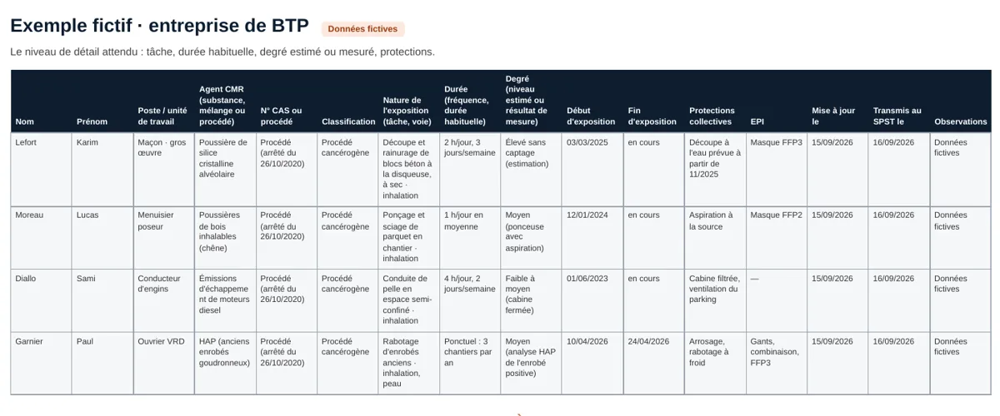

Modèle de liste des travailleurs exposés aux agents CMR
Un modèle gratuit, en Excel et en PDF, pour tenir la liste des travailleurs exposés aux agents CMR que tout employeur doit tenir depuis le 5 juillet 2024. Colonnes prêtes, mode d'emploi et deux exemples fictifs, BTP et industrie.
Mis à jour le 1er octobre 2026Pour qui ?
Dirigeants de TPE et PME, responsables HSE et QSE, ressources humaines, entreprises du BTP et de l'industrie : toute entreprise dont des salariés sont susceptibles d'être exposés à des agents CMR (silice cristalline, poussières de bois, émissions diesel, HAP, chrome VI, formaldéhyde…).
Ce que dit la loi
Le décret n° 2024-307 du 4 avril 2024 impose à l'employeur, depuis le 5 juillet 2024, de tenir la liste actualisée des travailleurs susceptibles d'être exposés aux agents CMR (articles R. 4412-93-1 et suivants du code du travail). Elle précise, lorsqu'ils sont connus, la nature, la durée et le degré de l'exposition, et elle est transmise au service de prévention et de santé au travail, qui la conserve au moins quarante ans. Les procédés cancérogènes concernés sont listés par l'arrêté du 26 octobre 2020.
Les colonnes du modèle
| Rubrique | Ce qu'on y écrit |
|---|---|
| Identité | Nom, prénom, poste ou unité de travail |
| Agent CMR | Substance, mélange ou procédé, n° CAS, classification (Carc., Muta., Repr. 1A ou 1B) |
| Nature | Tâche réalisée et voie d'exposition (inhalation, peau) |
| Durée | Fréquence et durée habituelle de l'exposition |
| Degré | Niveau estimé ou résultat de mesure, s'il existe |
| Période | Début et fin d'exposition |
| Protections | Protections collectives et équipements individuels |
| Suivi | Date de mise à jour et date de transmission au service de santé au travail |
Comment le remplir
- Partez de l'évaluation du risque chimique de votre DUERP.
- Une ligne par salarié et par agent CMR, dans l'onglet « Liste des exposés ».
- Décrivez la tâche, la durée habituelle et le degré d'exposition quand vous le connaissez.
- Mettez la liste à jour à chaque changement de poste, de produit ou de procédé.
- Transmettez-la au service de prévention et de santé au travail et notez la date d'envoi.

Modèle gratuit, sans inscription. Licence CC BY 4.0 : réutilisation et modification libres, avec la mention « VB Safety · vb-safety.com ». Les exemples sont fictifs.
Être prévenu des évolutions
Un e-mail quand la réglementation ou le modèle change. Rien d'autre.
Voir la politique de confidentialité.
La liste des exposés en 5 questions
Qui doit tenir la liste des travailleurs exposés ?
Tout employeur dont des salariés sont susceptibles d'être exposés à des agents cancérogènes, mutagènes ou toxiques pour la reproduction : substances et mélanges classés en catégorie 1A ou 1B, ou procédés cancérogènes comme la découpe de matériaux contenant de la silice. La taille de l'entreprise ne change rien à l'obligation.
Que doit contenir la liste ?
L'identité des travailleurs concernés, les agents CMR auxquels ils sont susceptibles d'être exposés et, lorsqu'ils sont connus, la nature, la durée et le degré de leur exposition. Elle s'appuie sur l'évaluation du risque chimique du document unique.
À qui la transmettre, et combien de temps la conserver ?
Au service de prévention et de santé au travail, qui conserve ces informations au moins quarante ans. Gardez aussi une trace de chaque version et de sa date d'envoi.
Ce modèle suffit-il à être en règle ?
Il vous aide à tenir la liste dans le bon format. Il ne remplace ni l'évaluation des risques, ni le dialogue avec votre service de santé au travail, ni les mesures de prévention à mettre en place.
Puis-je modifier et diffuser ce modèle ?
Oui. Il est publié sous licence CC BY 4.0 : vous pouvez l'adapter, l'intégrer à vos outils et le partager, y compris à des clients, en mentionnant « VB Safety · vb-safety.com ».
Selon votre secteur : traçabilité CMR sur chantier (BTP) · mesure et traçabilité CMR dans l'industrie · toutes les obligations de l'employeur.